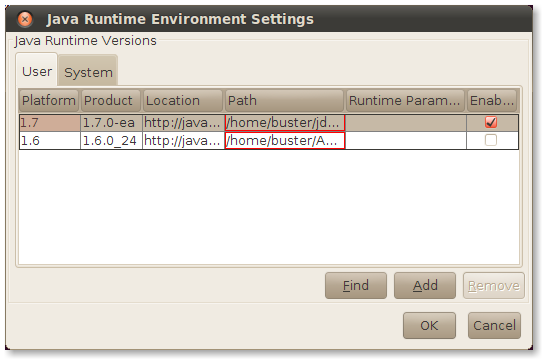

This following sections describes a number of problems concerning various configuration parameters and settings and suggests troubleshooting techniques for configuring Applets and Java Web Start applications.
If your application does not run, perform the following checks:
Verify that the Java Plugin is working.
Click Verify Java version.
If you see that the expected Java technology version is reported, then the plugin is enabled and found.
Check that your browser knows about the Java plugin.
Chrome: Type about: plugins in the address bar.
Firefox: On the Tools menu, select Addons and click Plugins.
Internet Explorer: On the Tools menu, select Manage Addons.
Make sure the Java runtime environment is installed.
On Windows, check the list of installed programs in the Control Panel.
The following are troubleshooting techniques for common configuration problems.
Install Java runtime:
It is not sufficient to install the Java Developer Kit. A JRE is required to be able to run an applet or webstart. Note: If you use a 64-bit browser, then the 64-bit version of the JRE is required. Similarly, the 32-bit JRE is necessary for 32-bit browsers.
Use latest matching plugin/webstart:
There could be just one plugin registered in the browser and the JRE will always register plugin from latest JRE on the system as active. The only way to ensure use of an older plugin is to uninstall newer JREs.
Restart browser for any change in the Java runtime configuration:
Java is not enabled or there are multiple places where Java could be disabled. Check the Java Control Panel and your browser plugins/addons list.
Make sure new generation plugin is enabled:
Unless you need to run in the legacy mode, make sure New generation plugin is enabled in the Java Control Panel.
Enable JavaScript:
If JavaScript is disabled, then an attempt to launch a Java applet may fail at very early stage.
Java control panel fails to make changes in the Java config:
On Windows 7 or Windows Vista systems with UAC on, the Java Control Panel may fail to update global registry settings. To work around this, make sure you launch Java Control Panel as Administrator if you need to alter these settings.
You can use the Java Control Panel tool to manage the list of installed Java Runtime Environments and their behavior. The Java Control Panel can be launched from the bin directory of the JRE installation folder. On Windows operating systems, you can also access it from Control Panel > Java.
Use Java Control Panel if you need to:
see what versions of JRE are installed and active
temporarily enable/disable use of particular version of JRE
set "global" parameters to be passed to JVM when applet or webstart application is launched
enable/disable use of Java Plugin in the particular browser
tune behavior of the plugin/webstart by specifying configuration parameters such as location of cache of temporary files or enable tracing as shown in Figure 16-1.
Figure 16-1 The Java Runtime Environment Settings Window
Troubleshooting, debugging, profiling and other development activities may require launching JVM with a special set of parameters. One way to accomplish this is to use the Java Control Panel.
Open the Java Control Panel and click View on the Java tab. Select the Runtime Parameters cell for the JRE you wish to change and enter parameters into this cell.
|
Note: TThese changes are global, meaning that any Java Web Start application or applet that runs using this version of JRE will have these parameters set (in addition to what the applet tag or JNLP file may specify). |
To pass parameters to a specific JVM used with Java Web Start or an applet, use one of the following techniques:
Set environment variable before launching javaws or the browser process.
JAVAWS_VM_ARGS for Java Web Start apps. For example:
JAVAWS_VM_ARGS = -Dsome.property=true
_JPI_VM_OPTIONS for applets. For example:
_JPI_VM_OPTIONS = -Dsome.property=true
|
Note: You need to restart your browser after you set the environment variable. If you are setting this environment variable in the command shell, then you must use the same command shell to launch the browser so that the browser inherits the value of the environment variable. |
Use the -J option for the javaws command. For example:
javaws -J-Dsome.property=true http://example.com/my.jnlp
This is the place where main configuration files are kept. The location is specific to your operating system:
Windows XP: %HOME%\Application Data\Sun\Java\Deployment
Windows 7/Vista: %APPDATA%\..\LocalLow\Sun\Java\Deployment
Oracle Solaris/Linux: %HOME%/.java/deployment
Both Java Plug-in and Java Web Start can print trace information into trace files. This includes log information from the JRE itself as well as everything your application may be printing to System.out or System.err.
To get access to trace information, follow these steps:
Open the Java Control Panel (jre_home_dir/bin/ControlPanel).
Select the Advanced tab.
In the Debugging category, select the Enable tracing check box.
Optionally, in the Java console category, select the Show console option to see trace information in the console window. The full trace still will be saved to a file.
The trace file is saved into the log directory in the Java deployment home folder. See Java Deployment Home. The file name has the prefix javaws or plugin, depending on what you are running. One trace file is produced per process, but one application can be launched using several processes.
To get the maximum level of detail in the trace file, edit the deployment.properties file (which is located in the Java deployment home directory) and add the following line:
deployment.trace.level=all
By default, a maximum of five trace files are created. The oldest trace files are automatically deleted. To change this limit of maximum number of trace files, add the following line to the deployment.properties file:
deployment.max.output.files=max_number_of_trace_files
You can use the Java console to view the trace log at runtime. By default, the Java console is hidden. Enable it in the Java Control Panel. For more details on troubleshooting deployment issues, see Troubleshoot Deployment Issues.
Application jars and resources are cached on the disk to avoid loading them the next time they are needed.
The default location of the cache depends on the operating system and can be overridden in the Java Control Panel.
Settings and controls for the cache are available in the General tab of the Java Control Panel, in the Temporary Internet Files section. Click Settings to change the location and size of the cache. Click View to see what files are in the cache.
You can clean the cache by running javaws -uninstall, or open the Java Control Panel's General tab, click View, and delete files manually. You can also use the Java Control Panel to uninstall individual applications and extensions.
In general, Java Web Start applications use the system network configuration by default, and applets use the browser network settings. You can set network proxies explicitly using Java Control Panel.
In particular, the Java technology networking layer automatically detects what networking stack to use. However, sometimes autodetection does not work and you may observe Permission Denied exceptions trying to open a socket to download your application or applet, even while the same URL is accessible using the same proxy settings with other tools. This problem was observed on some Windows 7 systems when VPN software is used. This can be resolved by explicitly passing a parameter to the JVM:
-Djava.net.preferIPv4Stack=true
For more details, see Pass Parameters to the JRE.